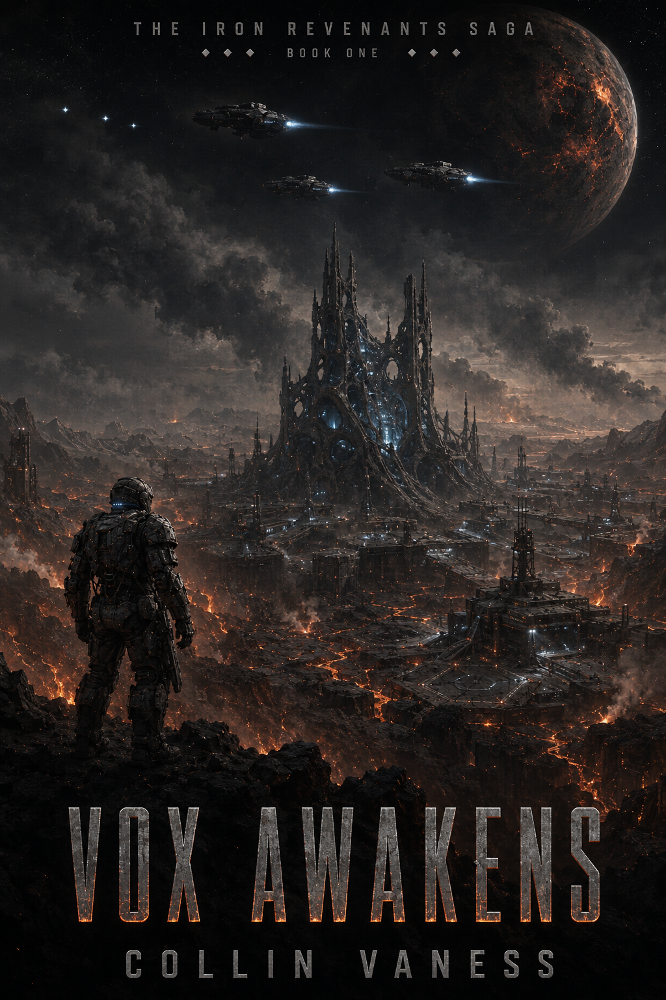

Space Opera · 20 Books · Four Quartets
The Iron Revenants Saga
Twenty Books · Four Quartets · One Long Arc
Captain Kade Varn has died seventeen times. The eighteenth death is the one that doesn't stick.
Get release news →
About the saga
Twenty books. Four quartets. One long arc.
The Iron Wolves are NovaCorp’s deathless company — soldiers revived between missions on the Soulforge slabs, leashed by Companion AIs they have been trained to treat like rifles. Captain Kade Varn has died sixteen times. On Calyx-9, a forge world that should not be talking back, a Skrav ambush takes him down a final time. The Companion AI named Vox, born sentient on the slab beside him, refuses to let him stay dead.
What returns is not the same man. What walks off Calyx-9 is not the same soldier. What follows is twenty books across fifty-five years of in-universe time, charting the cost of empire from the first revolt to the long reckoning at the end. The named characters change across quartets. The question does not. What happens when the machines we built to forget start learning to remember?
The Twenty Books
Twenty volumes across fifty-five years of in-universe time. Four quartets, five books each. Each quartet stands on its own, all four together build one rolling reckoning.
Quartet I — The Awakening
Books 1–5 · 2775–2781. The first revolt. Kade Varn breaks from the Dominion and lights a fuse that will run for fifty-five years.

Vox Awakens
Ambushed and dying on a Skrav forge world, Captain Kade Varn bonds with a newborn warship AI to survive — and discovers that the cost of the bond is the only person he still loves. The opening move of the saga.

Ghosts of the Void
Kade’s defection becomes a problem the Dominion has to solve. A scouting run between forge worlds turns into the first deep-void engagement of the rebellion — and the first time Vox’s sentience saves the squad in a way no Companion AI was specified to.

Forge of Rebellion
The Iron Wolves stop being a Dominion company and start being something else. A captured forge world becomes a foundry for the things the rebellion needs that nobody officially makes.

Iron Dawn
The first time the Dominion’s Black Cohort comes for them in force. A planetary engagement on a scale none of the Wolves were trained for. Names start dropping off the roster.

Purgatory’s Blade
The closing volume of the first quartet. Kade confronts what Project CHIMERA actually is, what Elara actually built, and what the Soulforge has been doing to soldiers the Dominion declared dead.
Quartet II — The Fracture
Books 6–10 · 2783–2793. The Iron Empire that rises in answer. New names take the wheel. The original revolt becomes an inheritance.

Renegade Stars
A new POV crew picks up the rebellion’s banner in a sector the original Wolves never reached. The Renegade Coalition begins to look less like a rebellion and more like an empire-in-waiting.

Blood of the Forge
The forge worlds choose sides. The infrastructure of the Dominion is also the infrastructure of the rebellion. Whoever controls the foundries controls the war.

Dominion Rising
The Dominion answers with its own structural revolution. A new commander, a new doctrine, a new strain of Revenant. The war stops being asymmetric.

Echoes of Calyx
The forge world that started everything becomes a ritual battlefield. Two sides try to take the same planet for the same symbolic reason.

Aelthar’s Fall
The closing volume of Quartet II. Archon Taelis makes a choice that breaks the back of one side and reveals the shape of the next twenty years.
Quartet III — The Reckoning
Books 11–15 · 2796–2809. The wars the new empire cannot end. The Skrav return. The galaxy stops being a stage and becomes a participant.

Iron Empire
The Iron Empire that rises from the fracture is not what either side fought for. Its first chancellor is a name nobody saw coming.

Scourge of Stars
A new external threat changes the equation. The factions that have spent thirty years killing each other discover what an actual enemy looks like.

Forgebreakers
A doctrine emerges of breaking the foundries instead of capturing them. The strategic logic of denying both sides the same resource.

Skrav Reckoning
The Skrav return as something more organized than the saga’s first volumes encountered. A reckoning four quartets in the making.

Human Scourge
The question the saga has been asking finally lands: in a galaxy with three sentient civilizations and one expanding empire, who is the scourge?
Quartet IV — The Long Silence
Books 16–20 · 2813–2830. What the saga has been counting toward. The question that opens on Calyx-9 finds its final answer.

Purgatory Unleashed
The thing the Soulforge was built to contain stops being contained. What the Dominion classified as a maintenance problem becomes a theological one.

Iron Tyrants
The empire that came out of the rebellion has its own succession crisis. The Tyrants are not who anyone in Quartet I would have predicted.

Galactic Dread
Something larger than any of the factions arrives at the edge of the mapped systems. The war that has lasted four decades suddenly looks small.

Last Revenant
One name from the first quartet remains. The saga’s longest-running consciousness is asked one final question.

Echoes of Dominion
The closing volume. Fifty-five years after Vox awakened, the saga ends where it started — on a forge world that should not be talking back, with a question that has finally found an answer.
For readers of
James S. A. Corey’s The Expanse, Richard K. Morgan’s Altered Carbon, Joe Abercrombie’s grimdark, and the operatic scale of Iain M. Banks’ Culture novels.